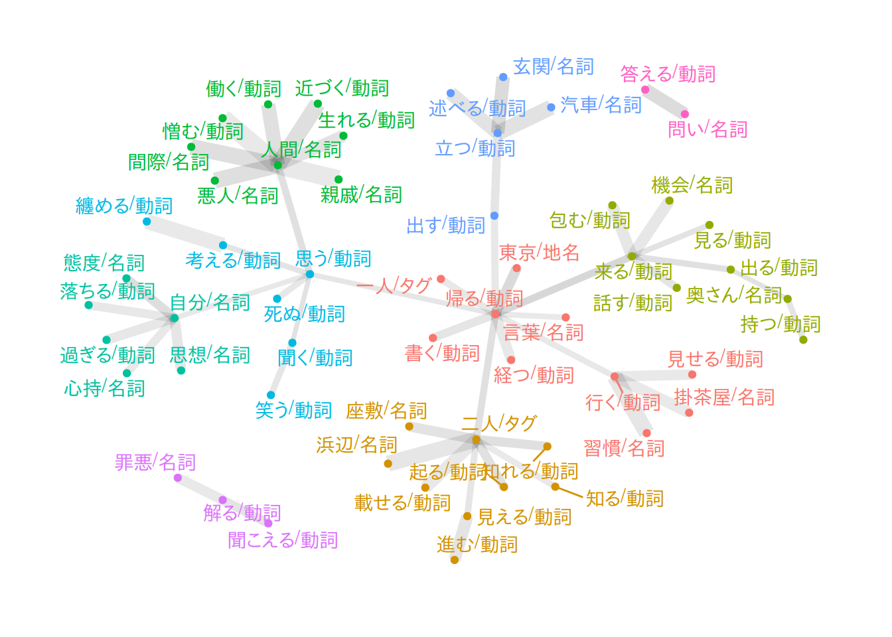
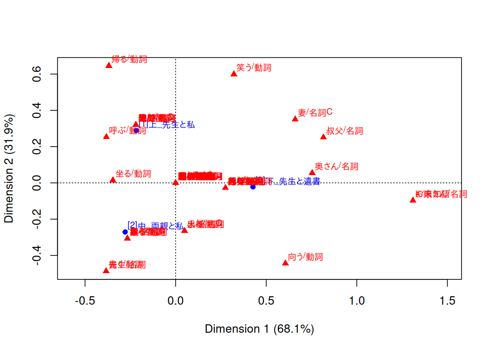
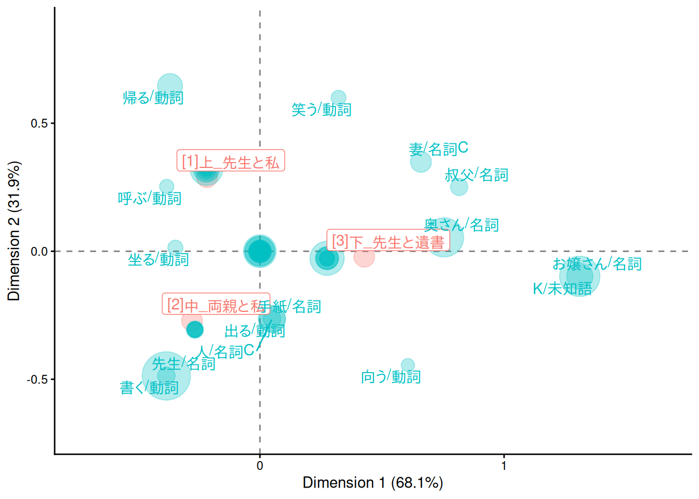
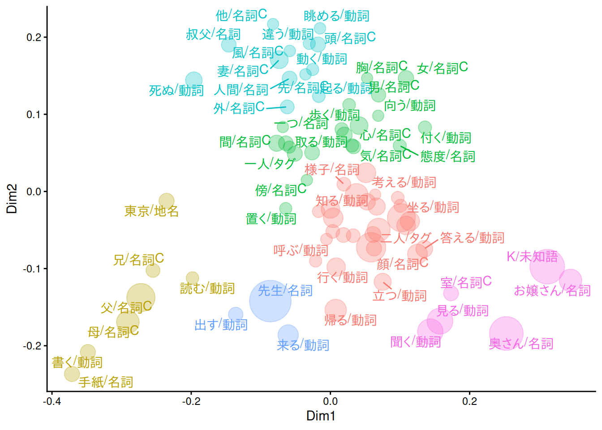

suppressPackageStartupMessages({
library(ggplot2)
library(duckdb)
library(arules)
library(arulesViz)
library(ca)
})
drv <- duckdb::duckdb()
con <- duckdb::dbConnect(drv, dbdir = "tutorial_jp/kokoro.duckdb", read_only = TRUE)
tbl <-
readxl::read_xls("tutorial_jp/kokoro.xls",
col_names = c("text", "section", "chapter", "label"),
skip = 1
) |>
dplyr::mutate(
doc_id = factor(dplyr::row_number()),
dplyr::across(where(is.character), ~ audubon::strj_normalize(.))
) |>
dplyr::filter(!gibasa::is_blank(text)) |>
dplyr::relocate(doc_id, text, section, label, chapter)Appendix C — 抽出語メニュー2
C.1 関連語検索（A.5.6）
C.1.1 関連語のリスト
「確率差」や「確率比」については、いちおう計算はできた気がしますが、あっているのかよくわからないです。また、このやり方はそれなりの数の共起について計算をしなければならず、共起行列が大きくなると大変そうなため、あまりおすすめしません。
dfm <-
dplyr::tbl(con, "tokens") |>
dplyr::filter(
section == "[1]上_先生と私",
pos %in% c(
"名詞", # "名詞B", "名詞C",
"地名", "人名", "組織名", "固有名詞",
"動詞", "未知語", "タグ"
)
) |>
dplyr::mutate(
token = dplyr::if_else(is.na(original), token, original),
token = paste(token, pos, sep = "/")
) |>
dplyr::count(doc_id, token) |>
dplyr::collect() |>
tidytext::cast_dfm(doc_id, token, n) |>
quanteda::dfm_weight(scheme = "boolean")
dat <- dfm |>
quanteda::fcm() |>
tidytext::tidy() |>
dplyr::rename(target = document, co_occur = count) |>
rlang::as_function(~ {
col_sums <- quanteda::colSums(dfm)
dplyr::reframe(.,
term = term,
target_occur = col_sums[target],
term_occur = col_sums[term],
co_occur = co_occur,
.by = target
)
})() |>
dplyr::mutate(
p_x = target_occur / quanteda::ndoc(dfm),
p_y = term_occur / quanteda::ndoc(dfm),
p_xy = (co_occur / quanteda::ndoc(dfm)) / p_x,
differential = p_xy - p_y, # 確率差
lift = p_xy / p_y, # 確率比（リフト）,
jaccard = co_occur / (target_occur + term_occur - co_occur),
dice = 2 * co_occur / (target_occur + term_occur)
) |>
dplyr::select(target, term, differential, lift, jaccard, dice)
dat
#> # A tibble: 26,820 × 6
#> target term differential lift jaccard dice
#> <chr> <chr> <dbl> <dbl> <dbl> <dbl>
#> 1 先生/名詞 知り合い/名詞 0.00790 2.10 0.0151 0.0297
#> 2 先生/名詞 海水浴/名詞 0.000176 1.05 0.00376 0.00749
#> 3 先生/名詞 帰る/動詞 0.0150 1.20 0.0848 0.156
#> 4 先生/名詞 断る/動詞 0.000529 1.05 0.0112 0.0221
#> 5 先生/名詞 一人/タグ 0.0129 1.40 0.0443 0.0848
#> 6 先生/名詞 大分/地名 -0.00145 0.839 0.00746 0.0148
#> 7 先生/名詞 鎌倉/地名 0.00430 1.40 0.0150 0.0295
#> 8 先生/名詞 探す/動詞 -0.00162 0.699 0.00375 0.00746
#> 9 先生/名詞 建てる/動詞 0.000176 1.05 0.00376 0.00749
#> 10 先生/名詞 通り抜ける/動詞 -0.00342 0.525 0.00373 0.00743
#> # ℹ 26,810 more rowsC.1.2 共起ネットワーク
「先生/名詞」と関連の強そうな語の共起を図示した例です。
「先生/名詞」と共起している語のうち、出現回数が上位20位以内である語がtargetである共起を抽出したうえで、それらのなかからJaccard係数が大きい順に75個だけ残しています。「先生/名詞」という語そのものは図に含めていません。
dat |>
dplyr::inner_join(
dplyr::filter(dat, target == "先生/名詞") |> dplyr::select(term),
by = dplyr::join_by(target == term)
) |>
dplyr::filter(target %in% names(quanteda::topfeatures(dfm, 20))) |>
dplyr::slice_max(jaccard, n = 75) |>
tidygraph::as_tbl_graph(directed = FALSE) |>
tidygraph::to_minimum_spanning_tree() |>
purrr::pluck("mst") |>
dplyr::mutate(
community = factor(tidygraph::group_leading_eigen())
) |>
ggraph::ggraph(layout = "fr") +
ggraph::geom_edge_link(aes(width = sqrt(lift), alpha = jaccard)) +
ggraph::geom_node_point(aes(colour = community), show.legend = FALSE) +
ggraph::geom_node_text(aes(label = name, colour = community), repel = TRUE, show.legend = FALSE) +
ggraph::theme_graph()
C.1.3 アソシエーション分析🍳
英語だとこのメニューの名前は「Word Association」となっているので、ふつうにアソシエーション分析すればいいと思いました。
arulesのtransactionsオブジェクトをつくるには、quantedaのfcmオブジェクトから変換すればOKです（arulesをアタッチしている必要があります）。
library(arules)
library(arulesViz)
dat <-
dplyr::tbl(con, "tokens") |>
dplyr::filter(
pos %in% c(
"名詞", # "名詞B", "名詞C",
"地名", "人名", "組織名", "固有名詞",
"動詞", "未知語", "タグ"
)
) |>
dplyr::mutate(
token = dplyr::if_else(is.na(original), token, original),
token = paste(token, pos, sep = "/")
) |>
dplyr::count(doc_id, token) |>
dplyr::collect() |>
tidytext::cast_dfm(doc_id, token, n) |>
quanteda::dfm_weight(scheme = "boolean") |>
quanteda::fcm() |>
as("nMatrix") |>
as("transactions")arules::apriori()でアソシエーションルールを抽出します。
rules <-
arules::apriori(
dat,
parameter = list(
support = 0.075,
confidence = 0.8,
minlen = 2,
maxlen = 2, # LHS+RHSの長さ。変えないほうがよい
maxtime = 5
),
control = list(verbose = FALSE)
)この形式のオブジェクトはas(rules, "data.frame")のようにしてデータフレームに変換できます。tibbleにしたい場合には次のようにすればよいです。
as(rules, "data.frame") |>
dplyr::mutate(across(where(is.numeric), ~ signif(., digits = 3))) |>
tidyr::separate_wider_delim(rules, delim = " => ", names = c("lhs", "rhs")) |>
dplyr::arrange(desc(lift))
#> # A tibble: 49 × 7
#> lhs rhs support confidence coverage lift count
#> <chr> <chr> <dbl> <dbl> <dbl> <dbl> <dbl>
#> 1 {黙る/動詞} {聞く/動詞} 0.102 0.829 0.123 2.05 301
#> 2 {付ける/動詞} {聞く/動詞} 0.11 0.822 0.133 2.03 323
#> 3 {過ぎる/動詞} {自分/名詞} 0.0887 0.906 0.0978 1.84 261
#> 4 {感じ/名詞} {自分/名詞} 0.0938 0.879 0.107 1.79 276
#> 5 {分る/動詞} {出る/動詞} 0.105 0.812 0.13 1.78 310
#> 6 {打ち明ける/動詞} {自分/名詞} 0.0887 0.861 0.103 1.75 261
#> 7 {人間/名詞} {自分/名詞} 0.17 0.858 0.198 1.75 501
#> 8 {繰り返す/動詞} {自分/名詞} 0.0917 0.852 0.108 1.73 270
#> 9 {信じる/動詞} {思う/動詞} 0.0781 0.927 0.0842 1.71 230
#> 10 {疑う/動詞} {自分/名詞} 0.0856 0.824 0.104 1.68 252
#> # ℹ 39 more rowsC.1.4 散布図🍳
plot(rules, engine = "html")
#> To reduce overplotting, jitter is added! Use jitter = 0 to prevent jitter.C.1.5 バルーンプロット🍳
plot(rules, method = "grouped", engine = "html")C.1.6 ネットワーク図🍳
plot(rules, method = "graph", engine = "html")C.2 対応分析（A.5.7）
C.2.1 コレスポンデンス分析
段落（doc_id）内の頻度で語彙を削ってから部（section）ごとに集計するために、ややめんどうなことをしています。
dfm <-
dplyr::tbl(con, "tokens") |>
dplyr::filter(
pos %in% c(
"名詞", "名詞B", "名詞C",
"地名", "人名", "組織名", "固有名詞",
"動詞", "未知語", "タグ"
)
) |>
dplyr::mutate(
token = dplyr::if_else(is.na(original), token, original),
token = paste(token, pos, sep = "/")
) |>
dplyr::count(doc_id, token) |>
dplyr::collect() |>
tidytext::cast_dfm(doc_id, token, n) |>
quanteda::dfm_trim(
min_termfreq = 75,
termfreq_type = "rank",
min_docfreq = 30,
docfreq_type = "count"
)こうしてdoc_idごとに集計したdfmオブジェクトを一度tidytext::tidy()して3つ組のデータフレームに戻し、sectionのラベルを結合します。このデータフレームをもう一度tidytext::cast_dfm()で疎行列に変換して、quanteda.textmodels::textmodel_ca()を使って対応分析にかけます。
ca_fit <- dfm |>
tidytext::tidy() |>
dplyr::left_join(
dplyr::select(tbl, doc_id, section),
by = dplyr::join_by(document == doc_id)
) |>
tidytext::cast_dfm(section, term, count) |>
quanteda.textmodels::textmodel_ca(nd = 2, sparse = TRUE)この関数は疎行列に対して計算をおこなえるため、比較的大きな行列を渡しても大丈夫そうです。
C.2.2 バイプロット
caパッケージを読み込んでいるとplot()でバイプロットを描けます。factoextra::fviz_ca_biplot()でも描けますが、見た目はplot()のとあまり変わらないです。
library(ca)
dat <- plot(ca_fit)
C.2.3 バイプロット（バブルプロット）
ggplot2でバイプロットを描画するには、たとえば次のようにします。ggrepel::geom_text_repel()でラベルを出す語彙の選択の仕方は、もうすこし工夫したほうがよいかもしれないです。
なお、このコードはCorrespondence Analysis visualization using ggplot | R-bloggersを参考にしました。
tf <- dfm |>
tidytext::tidy() |>
dplyr::left_join(
dplyr::select(tbl, doc_id, section),
by = dplyr::join_by(document == doc_id)
) |>
dplyr::summarise(tf = sum(count), .by = term) |>
dplyr::pull(tf, term)
# modified from https://www.r-bloggers.com/2019/08/correspondence-analysis-visualization-using-ggplot/
make_ca_plot_df <- function(ca.plot.obj, row.lab = "Rows", col.lab = "Columns") {
tibble::tibble(
Label = c(
rownames(ca.plot.obj$rows),
rownames(ca.plot.obj$cols)
),
Dim1 = c(
ca.plot.obj$rows[, 1],
ca.plot.obj$cols[, 1]
),
Dim2 = c(
ca.plot.obj$rows[, 2],
ca.plot.obj$cols[, 2]
),
Variable = c(
rep(row.lab, nrow(ca.plot.obj$rows)),
rep(col.lab, nrow(ca.plot.obj$cols))
)
)
}
dat <- dat |>
make_ca_plot_df(row.lab = "Construction", col.lab = "Medium") |>
dplyr::mutate(
Size = dplyr::if_else(Variable == "Construction", mean(tf), tf[Label])
)
# 非ASCII文字のラベルに対してwarningを出さないようにする
suppressWarnings({
ca_sum <- summary(ca_fit)
dim_var_percs <- ca_sum$scree[, "values2"]
})
dat |>
ggplot(aes(x = Dim1, y = Dim2, col = Variable, label = Label)) +
geom_vline(xintercept = 0, lty = "dashed", alpha = .5) +
geom_hline(yintercept = 0, lty = "dashed", alpha = .5) +
geom_jitter(aes(size = Size), alpha = .3, show.legend = FALSE) +
ggrepel::geom_label_repel(
data = \(x) dplyr::filter(x, Variable == "Construction"),
show.legend = FALSE
) +
ggrepel::geom_text_repel(
data = \(x) dplyr::filter(x, Variable == "Medium", sqrt(Dim1^2 + Dim2^2) > 0.25),
show.legend = FALSE
) +
scale_x_continuous(
limits = range(dat$Dim1) +
c(diff(range(dat$Dim1)) * -0.2, diff(range(dat$Dim1)) * 0.2)
) +
scale_y_continuous(
limits = range(dat$Dim2) +
c(diff(range(dat$Dim2)) * -0.2, diff(range(dat$Dim2)) * 0.2)
) +
scale_size_area(max_size = 16) +
labs(
x = paste0("Dimension 1 (", signif(dim_var_percs[1], 3), "%)"),
y = paste0("Dimension 2 (", signif(dim_var_percs[2], 3), "%)")
) +
theme_classic()
#> Warning: ggrepel: 22 unlabeled data points (too many overlaps). Consider
#> increasing max.overlaps
C.3 多次元尺度構成法（A.5.8）
C.3.1 MDS・バブルプロット
MASS::isoMDS()よりMASS::sammon()のほうがたぶん見やすいです。
simil <- dfm |>
quanteda::dfm_weight(scheme = "boolean") |>
proxyC::simil(margin = 2, method = "jaccard")
dat <- MASS::sammon(1 - simil, k = 2) |>
purrr::pluck("points")
#> Initial stress : 0.62279
#> stress after 0 iters: 0.62279dat <- dat |>
dplyr::as_tibble(
rownames = "label",
.name_repair = ~ c("Dim1", "Dim2")
) |>
dplyr::mutate(
size = tf[label],
clust = (hclust(
proxyC::dist(dat, method = "euclidean") |> as.dist(),
method = "ward.D2"
) |> cutree(k = 6))[label]
)
dat |>
ggplot(aes(x = Dim1, y = Dim2, label = label, col = factor(clust))) +
geom_point(aes(size = size), alpha = .3, show.legend = FALSE) +
ggrepel::geom_text_repel(show.legend = FALSE) +
scale_size_area(max_size = 16) +
theme_classic()
#> Warning: ggrepel: 22 unlabeled data points (too many overlaps). Consider
#> increasing max.overlaps
duckdb::dbDisconnect(con)
duckdb::duckdb_shutdown(drv)
sessioninfo::session_info(info = "packages")
#> ═ Session info ═══════════════════════════════════════════════════════════════
#> ─ Packages ───────────────────────────────────────────────────────────────────
#> package * version date (UTC) lib source
#> arules * 1.7-11 2025-05-29 [1] RSPM (R 4.5.0)
#> arulesViz * 1.5.4 2025-08-21 [1] RSPM (R 4.5.0)
#> audubon 0.5.2 2024-04-27 [1] RSPM (R 4.5.0)
#> blob 1.2.4 2023-03-17 [1] RSPM
#> ca * 0.71.1 2020-01-24 [1] RSPM (R 4.5.0)
#> cachem 1.1.0 2024-05-16 [1] RSPM
#> cellranger 1.1.0 2016-07-27 [1] RSPM (R 4.5.0)
#> cli 3.6.5 2025-04-23 [1] RSPM
#> codetools 0.2-20 2024-03-31 [2] CRAN (R 4.5.1)
#> crosstalk 1.2.2 2025-08-26 [1] RSPM (R 4.5.0)
#> curl 7.0.0 2025-08-19 [1] RSPM
#> data.table 1.17.8 2025-07-10 [1] RSPM (R 4.5.0)
#> DBI * 1.2.3 2024-06-02 [1] RSPM (R 4.5.0)
#> dbplyr 2.5.1 2025-09-10 [1] RSPM
#> digest 0.6.37 2024-08-19 [1] RSPM
#> dplyr 1.1.4 2023-11-17 [1] RSPM (R 4.5.0)
#> duckdb * 1.4.0 2025-09-18 [1] RSPM (R 4.5.0)
#> evaluate 1.0.5 2025-08-27 [1] RSPM
#> farver 2.1.2 2024-05-13 [1] RSPM (R 4.5.0)
#> fastmap 1.2.0 2024-05-15 [1] RSPM
#> fastmatch 1.1-6 2024-12-23 [1] RSPM (R 4.5.0)
#> foreach 1.5.2 2022-02-02 [1] RSPM (R 4.5.0)
#> generics 0.1.4 2025-05-09 [1] RSPM (R 4.5.0)
#> ggforce 0.5.0 2025-06-18 [1] RSPM (R 4.5.0)
#> ggplot2 * 4.0.0 2025-09-11 [1] RSPM (R 4.5.0)
#> ggraph 2.2.2 2025-08-24 [1] RSPM (R 4.5.0)
#> ggrepel 0.9.6 2024-09-07 [1] RSPM (R 4.5.0)
#> gibasa 1.1.2 2025-02-16 [1] RSPM (R 4.5.0)
#> glmnet 4.1-10 2025-07-17 [1] RSPM (R 4.5.0)
#> glue 1.8.0 2024-09-30 [1] RSPM
#> graphlayouts 1.2.2 2025-01-23 [1] RSPM (R 4.5.0)
#> gridExtra 2.3 2017-09-09 [1] RSPM (R 4.5.0)
#> gtable 0.3.6 2024-10-25 [1] RSPM (R 4.5.0)
#> htmltools 0.5.8.1 2024-04-04 [1] RSPM
#> htmlwidgets 1.6.4 2023-12-06 [1] RSPM
#> httr 1.4.7 2023-08-15 [1] RSPM (R 4.5.0)
#> igraph 2.1.4 2025-01-23 [1] RSPM (R 4.5.0)
#> iterators 1.0.14 2022-02-05 [1] RSPM (R 4.5.0)
#> janeaustenr 1.0.0 2022-08-26 [1] RSPM (R 4.5.0)
#> jsonlite 2.0.0 2025-03-27 [1] RSPM
#> knitr 1.50 2025-03-16 [1] RSPM
#> labeling 0.4.3 2023-08-29 [1] RSPM (R 4.5.0)
#> lattice 0.22-7 2025-04-02 [2] CRAN (R 4.5.1)
#> lazyeval 0.2.2 2019-03-15 [1] RSPM
#> lifecycle 1.0.4 2023-11-07 [1] RSPM
#> magrittr 2.0.4 2025-09-12 [1] RSPM
#> MASS 7.3-65 2025-02-28 [2] CRAN (R 4.5.1)
#> Matrix * 1.7-3 2025-03-11 [2] CRAN (R 4.5.1)
#> memoise 2.0.1 2021-11-26 [1] RSPM
#> pillar 1.11.1 2025-09-17 [1] RSPM
#> pkgconfig 2.0.3 2019-09-22 [1] RSPM
#> plotly 4.11.0 2025-06-19 [1] RSPM (R 4.5.0)
#> polyclip 1.10-7 2024-07-23 [1] RSPM (R 4.5.0)
#> proxyC 0.5.2 2025-04-25 [1] RSPM (R 4.5.0)
#> purrr 1.1.0 2025-07-10 [1] RSPM
#> quanteda 4.3.1 2025-07-10 [1] RSPM (R 4.5.0)
#> quanteda.textmodels 0.9.10 2025-02-10 [1] RSPM (R 4.5.0)
#> R.cache 0.17.0 2025-05-02 [1] RSPM
#> R.methodsS3 1.8.2 2022-06-13 [1] RSPM
#> R.oo 1.27.1 2025-05-02 [1] RSPM
#> R.utils 2.13.0 2025-02-24 [1] RSPM
#> R6 2.6.1 2025-02-15 [1] RSPM
#> RColorBrewer 1.1-3 2022-04-03 [1] RSPM (R 4.5.0)
#> Rcpp 1.1.0 2025-07-02 [1] RSPM
#> RcppParallel 5.1.11-1 2025-08-27 [1] RSPM (R 4.5.0)
#> readxl 1.4.5 2025-03-07 [1] RSPM (R 4.5.0)
#> registry 0.5-1 2019-03-05 [1] RSPM (R 4.5.0)
#> rlang 1.1.6 2025-04-11 [1] RSPM
#> rmarkdown 2.30 2025-09-28 [1] RSPM (R 4.5.0)
#> RSpectra 0.16-2 2024-07-18 [1] RSPM (R 4.5.0)
#> S7 0.2.0 2024-11-07 [1] RSPM (R 4.5.0)
#> scales 1.4.0 2025-04-24 [1] RSPM (R 4.5.0)
#> seriation 1.5.8 2025-08-20 [1] RSPM (R 4.5.0)
#> sessioninfo 1.2.3 2025-02-05 [1] RSPM
#> shape 1.4.6.1 2024-02-23 [1] RSPM (R 4.5.0)
#> SnowballC 0.7.1 2023-04-25 [1] RSPM (R 4.5.0)
#> stopwords 2.3 2021-10-28 [1] RSPM (R 4.5.0)
#> stringi 1.8.7 2025-03-27 [1] RSPM
#> stringr 1.5.2 2025-09-08 [1] RSPM
#> styler 1.10.3 2024-04-07 [1] RSPM
#> survival 3.8-3 2024-12-17 [2] CRAN (R 4.5.1)
#> tibble 3.3.0 2025-06-08 [1] RSPM
#> tidygraph 1.3.1 2024-01-30 [1] RSPM (R 4.5.0)
#> tidyr 1.3.1 2024-01-24 [1] RSPM (R 4.5.0)
#> tidyselect 1.2.1 2024-03-11 [1] RSPM (R 4.5.0)
#> tidytext 0.4.3 2025-07-25 [1] RSPM (R 4.5.0)
#> tokenizers 0.3.0 2022-12-22 [1] RSPM (R 4.5.0)
#> TSP 1.2-5 2025-05-27 [1] RSPM (R 4.5.0)
#> tweenr 2.0.3 2024-02-26 [1] RSPM (R 4.5.0)
#> utf8 1.2.6 2025-06-08 [1] RSPM
#> V8 8.0.0 2025-09-27 [1] RSPM (R 4.5.0)
#> vctrs 0.6.5 2023-12-01 [1] RSPM
#> viridis 0.6.5 2024-01-29 [1] RSPM (R 4.5.0)
#> viridisLite 0.4.2 2023-05-02 [1] RSPM (R 4.5.0)
#> visNetwork 2.1.4 2025-09-04 [1] RSPM (R 4.5.0)
#> withr 3.0.2 2024-10-28 [1] RSPM
#> xfun 0.53 2025-08-19 [1] RSPM
#> yaml 2.3.10 2024-07-26 [1] RSPM
#>
#> [1] /usr/local/lib/R/site-library
#> [2] /usr/local/lib/R/library
#> * ── Packages attached to the search path.
#>
#> ──────────────────────────────────────────────────────────────────────────────